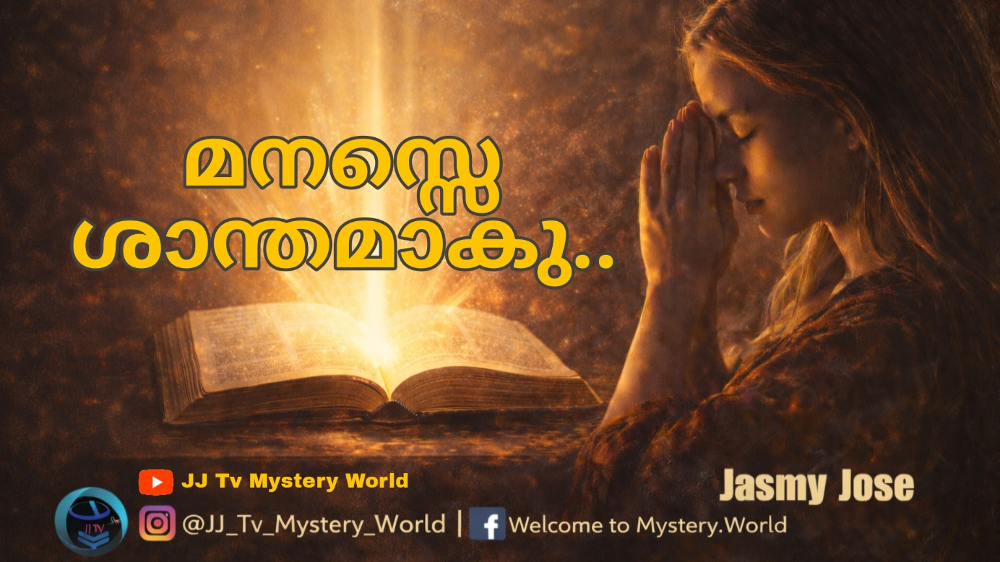

മനസ്സേ …ശാന്തമാകൂ…
മനസ്സെ ശാന്തമാകു…….
ക്രിസ്തുവിന്റെ മണവാട്ടിയായ സഭ, ദൈവിക പദ്ധതിയിലേക്കുള്ള വിളിയോട് പ്രതികരിക്കുന്നതിന്റെ പ്രഥമവും പ്രധാനവുമായ പടിയാണ് മാനസാന്തരം. എന്നാൽ, ഇത് ക്രിസ്തീയ ജീവിതത്തിന്റെ ആദ്യ ഏടുകളിൽ മാത്രം ഒതുങ്ങിനിൽക്കേണ്ട ഒന്നല്ല; മറിച്ച്, ദൈനംദിന ജീവിതത്തിന്റെ ഭാഗമായി നാം കൈക്കൊള്ളേണ്ട ഒരു തുടർച്ചയായ പ്രക്രിയയാണ്.
മനസ്സ് എന്ന സങ്കീർണ്ണത
മനസ്സുകൊണ്ട് ദൈവത്തിൽനിന്നും അകന്നുപോകാൻ ഒരു മനുഷ്യന് എത്ര എളുപ്പമാണ്! മനുഷ്യ മനസ്സിനെ അളക്കുവാൻ ആർക്കാണ് കഴിയുക? മനസ്സിന് കൃത്യമായ ഒരു രൂപമില്ലെങ്കിലും അത് അഗാധവും ഏതുതരം മാറ്റങ്ങൾക്കും വിധേയമാകുന്നതുമാണ്.
നമ്മുടെ മനസ്സും ഈ ലോകവും തമ്മിൽ നിരന്തരമായ ഒരു സംവാദം നടന്നുകൊണ്ടിരിക്കുന്നുണ്ട്. നാം കാണുന്നതും, കേൾക്കുന്നതും, അനുഭവിക്കുന്നതുമായ ഓരോ കാര്യങ്ങളും നമ്മുടെ മനസ്സിനെ സ്വാധീനിക്കുന്നു. സന്തോഷകരമായ ഒരു ബാല്യം നല്ലൊരു മനസ്സിന് വളമായിത്തീരാമെങ്കിൽ, പിൽക്കാലത്തുണ്ടാകുന്ന തിക്താനുഭവങ്ങൾ മനസ്സിന്റെ ഘടനയെത്തന്നെ മാറ്റിമറിച്ചേക്കാം.
ഈ ഇന്റർനെറ്റ് യുഗത്തിൽ, നമ്മുടെ ചുറ്റുപാടുകളെക്കാളും അധികമായി സിനിമ, സീരിയൽ, റീലുകൾ സോഷ്യൽ മീഡിയ ട്രെൻഡുകൾ എന്നിവ നമ്മുടെ മനസ്സിനെ നിയന്ത്രിക്കുന്നു. കൊച്ചുകുട്ടികൾ മുതൽ മുതിർന്നവർ വരെ, തങ്ങളുടെ മുൻഗണനകൾ നിശ്ചയിക്കുന്നത് പലപ്പോഴും ഇത്തരം സ്വാധീനങ്ങൾക്ക് വഴങ്ങിയാണ് എന്നത് ഗൗരവകരമായി ചിന്തിക്കേണ്ട വിഷയമാണ്. വർദ്ധിച്ചുവരുന്ന കോസ്മെറ്റിക് സർജറികളും, സിനിമകളിലെ വയലൻസുകളുടെ അനുകരണങ്ങളും തെളിയിക്കുന്നത്, മനസ്സ് ബാഹ്യലോകത്തിന്റെ സ്വാധീനവലയത്തിലാണെന്നാണ്.
മനസ്സിന്റെ പുതുക്കം
വീണ്ടും ജനിക്കപ്പെട്ട ദൈവമക്കളിൽ ദൈവം ആഗ്രഹിക്കുന്നത് 'മനസ്സിന്റെ പുതുക്കം' ആണ്. കാരണം, നന്മയും പ്രസാദവുമുള്ള ദൈവഹിതം എന്തെന്ന് തിരിച്ചറിയണമെങ്കിൽ പുതുക്കമുള്ള ഒരു മനസ്സ് അനിവാര്യമാണ്.
പഴയനിയമത്തിൽ, ദൈവമന്ദിരത്തിന്റെ രണ്ടാം ഭാഗമായ 'വിശുദ്ധസ്ഥലത്ത്' പുരോഹിതന്മാർ നിരന്തരം ശുശ്രൂഷകൾ നടത്തിയിരുന്നു. അവിടെ കാഴ്ചയപ്പത്തിന്റെ മേശയിൽ പുതിയ അപ്പം ഇല്ലാതെയോ, നിലവിളക്ക് തുടച്ച് തിരിയിട്ട് പ്രകാശം പരത്താതെയോ ഇരിക്കുന്ന ഒരു സമയം ഉണ്ടായിരുന്നില്ല. ഈ നിഴലുകൾ പുതിയ നിയമ സഭയെ ഓർമ്മിപ്പിക്കുന്നത് സുപ്രധാനമായ ഒരു സത്യമാണ്: ദൈവവചന ധ്യാനവും, പ്രാർത്ഥനയും, പരിശുദ്ധാത്മാവിന്റെ ഇടപെടലും നമ്മുടെ ഉള്ളിൽ എന്നും പ്രകാശിച്ചുകൊണ്ടേയിരിക്കണം. പഴയത് മാറി പുതിയത് വന്നുകൊണ്ടേയിരിക്കണം.
ജാഗ്രതയുടെ ആവശ്യം
ഇവിടെയാണ് അപ്പസ്തോലനായ പൗലോസിന്റെ മുന്നറിയിപ്പ് പ്രസക്തമാകുന്നത്. "സർപ്പം ഹവ്വയെ ഉപായത്താൽ ചതിച്ചതുപോലെ നിങ്ങളുടെ മനസ്സ് ക്രിസ്തുവിനോടുള്ള ഏകാഗ്രതയും നിർമ്മലതയും വിട്ടു വഷളായി പോകുമോ എന്ന് ഞാൻ ഭയപ്പെടുന്നു" (2 കൊരിന്ത്യർ 11:3). സഭയ്ക്കുവേണ്ടി അക്ഷീണം അധ്വാനിച്ച പൗലോസിന്റെ വലിയൊരു ആശങ്കയായിരുന്നു ഇത്. ആത്മീയ ജീവിതത്തിന്റെ ഏത് അളവിലുള്ളവർക്കും മാനസാന്തരവും ജാഗ്രതയും എപ്പോഴും ആവശ്യമാണെന്ന് ഇത് ചൂണ്ടിക്കാണിക്കുന്നു.
പിശാചിന്റെ തന്ത്രങ്ങൾക്ക് വിളനിലമായി നമ്മുടെ മനസ്സ് മാറാതിരിക്കാൻ നാം ശ്രദ്ധിക്കണം. ദൈവത്തിന്റെ വചനമാകുന്ന വിളക്ക് നമ്മിൽ കെട്ടുപോകാതെ, എപ്പോഴും ജ്വലിപ്പിച്ചു നിർത്തേണ്ടത് തിരഞ്ഞെടുക്കപ്പെട്ട ഓരോ വിശ്വാസിയുടെയും കടമയാണ്.
— Sis Jasmy Jineesh